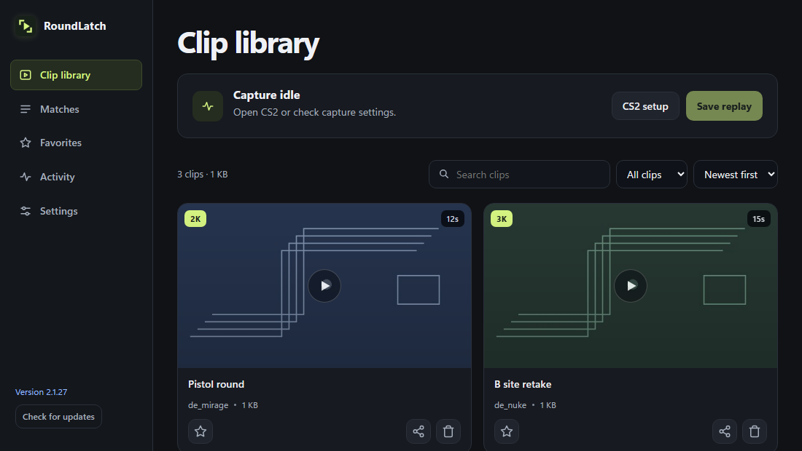

Save the action
Choose which match modes to clip and how much footage to save around each kill. Set a shortcut for manual replays.
Counter-Strike 2 / Windows
Capture kills automatically or save the last play with a hotkey. Find, trim, and export your clips from a library on your PC.
Installer and portable ZIP available on GitHub. Previously called Aegis Clipper.

Choose which match modes to clip and how much footage to save around each kill. Set a shortcut for manual replays.
Review clips by match and round, jump to a kill marker, and save a trimmed copy.
Queue clips with a 10 MB or 25 MB limit per file. Connect a sharing destination if you want to upload from the app.
Download the setup file from the latest GitHub release and run it. For the portable build, extract the ZIP and run the app inside it. Releases are unsigned.
In Settings, open CS2 connection and select Connect CS2. Finish setup, then restart CS2 if it was open.
Enter a practice match and wait for Replay buffer ready. Save a replay and play it back. In Windows 11, select CS2 only under Recording to isolate game audio.
Enter your FPS with capture off and the FPS you want to maintain. Then explore what would happen if recording added time to each frame.
The inputs below are hypothetical examples. The calculator assumes a fixed amount of extra time per frame. Actual capture cost depends on your hardware, settings, and what’s happening in the game.
Replay the same part of a CS2 demo with capture off, then on. Keep the resolution and game settings fixed. Repeat both runs and compare average FPS and 1% lows. Also check that the replay plays with sound.
This scenario puts you below your 120 FPS target.
Check the automatic highlight mode and minimum kills under Settings → Highlights. Deathmatch is excluded by default. Try a manual replay once the buffer is ready to check capture separately.
Choose an audio source under Settings → Recording and save a new replay. CS2-only capture requires Windows 11. If you use OBS, configure the audio sources in OBS.
Use Open clips folder in the tray menu. Settings → Storage lets you choose where future clips go.
For recording problems, open Activity → Copy recorder diagnostics and include the report with your recording issue.
Report a recording problem